Chapter 33: The Animal Body: Basic Form and Function¶
Introduction¶
The arctic fox is an example of a complex animal that has adapted to its environment and illustrates the relationships between an animal’s form and function. The structures of animals consist of primary tissues that make up more complex organs and organ systems. Homeostasis allows an animal to maintain a balance between its internal and external environments.
33.1 Animal Form and Function¶
Learning Objectives
By the end of this section, you will be able to do the following:
- Describe the various types of body plans that occur in animals
- Describe limits on animal size and shape
- Relate bioenergetics to body size, levels of activity, and the environment
Animals vary in form and function. From a sponge to a worm to a goat, an organism has a distinct body plan that limits its size and shape. Animals’ bodies are also designed to interact with their environments, whether in the deep sea, a rainforest canopy, or the desert. Therefore, a large amount of information about the structure of an organism's body (anatomy) and the function of its cells, tissues and organs (physiology) can be learned by studying that organism's environment.
Body Plans¶
![Illustration A shows an asymmetrical sponge with a tube-like body and a growth off to one side. Illustration B shows a sea anemone with a tube-like, radially symmetrical body. Tentacles grow from the top of the tube. Three vertical planes arranged 120 degrees apart dissect the body. The half of the body on one side of each plane is a mirror image of the body on the other side. Illustration C shows a goat with a bilaterally symmetrical body. A plane runs from front to back through the middle of the goat, dissecting the body into left and right halves, which are mirror images of each other. The top part of the goat is defined as dorsal, and the bottom part is defined as ventral. The front of the goat is defined as anterior, and the back is defined as posterior.](img/figure-33-01-01.webp)
Animal body plans follow set patterns related to symmetry. They are asymmetrical, radial, or bilateral in form as illustrated in Figure 33.2. Asymmetrical animals are animals with no pattern or symmetry; an example of an asymmetrical animal is a sponge. Radial symmetry, as illustrated in Figure 33.2, describes when an animal has an up-and-down orientation: any plane cut along its longitudinal axis through the organism produces equal halves, but not a definite right or left side. This plan is found mostly in aquatic animals, especially organisms that attach themselves to a base, like a rock or a boat, and extract their food from the surrounding water as it flows around the organism. Bilateral symmetry is illustrated in the same figure by a goat. The goat also has an upper and lower component to it, but a plane cut from front to back separates the animal into definite right and left sides. Additional terms used when describing positions in the body are anterior (front), posterior (rear), dorsal (toward the back), and ventral (toward the stomach). Bilateral symmetry is found in both land-based and aquatic animals; it enables a high level of mobility.
Limits on Animal Size and Shape¶
Animals with bilateral symmetry that live in water tend to have a fusiform shape: this is a tubular shaped body that is tapered at both ends. This shape decreases the drag on the body as it moves through water and allows the animal to swim at high speeds. Table 33.1 lists the maximum speed of various animals. Certain types of sharks can swim at fifty kilometers per hour and some dolphins at 32 to 40 kilometers per hour. Land animals frequently travel faster, although the tortoise and snail are significantly slower than cheetahs. Another difference in the adaptations of aquatic and land-dwelling organisms is that aquatic organisms are constrained in shape by the forces of drag in the water since water has higher viscosity than air. On the other hand, land-dwelling organisms are constrained mainly by gravity, and drag is relatively unimportant. For example, most adaptations in birds are for gravity not for drag.
Table 33.1
| Maximum Speed of Assorted Land & Marine Animals | ||
|---|---|---|
| Animal | Speed (kmh) | Speed (mph) |
| Cheetah | 113 | 70 |
| Quarter horse | 77 | 48 |
| Fox | 68 | 42 |
| Shortfin mako shark | 50 | 31 |
| Domestic house cat | 48 | 30 |
| Human | 45 | 28 |
| Dolphin | 32–40 | 20–25 |
| Mouse | 13 | 8 |
| Snail | 0.05 | 0.03 |
Most animals have an exoskeleton, including insects, spiders, scorpions, horseshoe crabs, centipedes, and crustaceans. Scientists estimate that, of insects alone, there are over 30 million species on our planet. The exoskeleton is a hard covering or shell that provides benefits to the animal, such as protection against damage from predators and from water loss (for land animals); it also provides for the attachments of muscles.
As the tough and resistant outer cover of an arthropod, the exoskeleton may be constructed of a tough polymer such as chitin and is often biomineralized with materials such as calcium carbonate. This is fused to the animal’s epidermis. Ingrowths of the exoskeleton, called apodemes, function as attachment sites for muscles, similar to tendons in more advanced animals (Figure 33.3). In order to grow, the animal must first synthesize a new exoskeleton underneath the old one and then shed or molt the original covering. This limits the animal’s ability to grow continually, and may limit the individual’s ability to mature if molting does not occur at the proper time. The thickness of the exoskeleton must be increased significantly to accommodate any increase in weight. It is estimated that a doubling of body size increases body weight by a factor of eight. The increasing thickness of the chitin necessary to support this weight limits most animals with an exoskeleton to a relatively small size. The same principles apply to endoskeletons, but they are more efficient because muscles are attached on the outside, making it easier to compensate for increased mass.
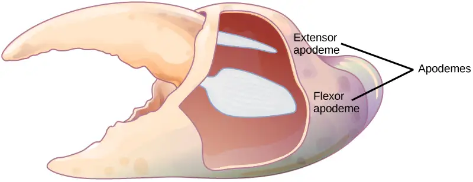
An animal with an endoskeleton has its size determined by the amount of skeletal system it needs in order to support the other tissues and the amount of muscle it needs for movement. As the body size increases, both bone and muscle mass increase. The speed achievable by the animal is a balance between its overall size and the bone and muscle that provide support and movement.
Limiting Effects of Diffusion on Size and Development¶
The exchange of nutrients and wastes between a cell and its watery environment occurs through the process of diffusion. All living cells are bathed in liquid, whether they are in a single-celled organism or a multicellular one. Diffusion is effective over a specific distance and limits the size that an individual cell can attain. If a cell is a single-celled microorganism, such as an amoeba, it can satisfy all of its nutrient and waste needs through diffusion. If the cell is too large, then diffusion is ineffective and the center of the cell does not receive adequate nutrients nor is it able to effectively dispel its waste.
An important concept in understanding how efficient diffusion is as a means of transport is the surface to volume ratio. Recall that any three-dimensional object has a surface area and volume; the ratio of these two quantities is the surface-to-volume ratio. Consider a cell shaped like a perfect sphere: it has a surface area of 4πr2, and a volume of (4/3)πr3. The surface-to-volume ratio of a sphere is 3/r; as the cell gets bigger, its surface to volume ratio decreases, making diffusion less efficient. The larger the size of the sphere, or animal, the less surface area for diffusion it possesses.
The solution to producing larger organisms is for them to become multicellular. Specialization occurs in complex organisms, allowing cells to become more efficient at doing fewer tasks. For example, circulatory systems bring nutrients and remove waste, while respiratory systems provide oxygen for the cells and remove carbon dioxide from them. Other organ systems have developed further specialization of cells and tissues and efficiently control body functions. Moreover, surface-to-volume ratio applies to other areas of animal development, such as the relationship between muscle mass and cross-sectional surface area in supporting skeletons, and in the relationship between muscle mass and the generation and dissipation of heat.
Interactive
Visit this site to see a time-lapse video of zebrafish development.
Animal Bioenergetics¶
All animals must obtain their energy from food they ingest or absorb. These nutrients are converted to adenosine triphosphate (ATP) for short-term storage and use by all cells. Some animals store energy for slightly longer times as glycogen, and others store energy for much longer times in the form of triglycerides housed in specialized adipose tissues. No energy system is one hundred percent efficient, and an animal’s metabolism produces waste energy in the form of heat. If an animal can conserve that heat and maintain a relatively constant body temperature, it is classified as a warm-blooded animal and called an endotherm. The insulation used to conserve the body heat comes in the forms of fur, fat, or feathers. The absence of insulation in ectothermic animals increases their dependence on the environment for body heat.
The amount of energy expended by an animal over a specific time is called its metabolic rate. The rate is measured variously in joules, calories, or kilocalories (1000 calories). Carbohydrates and proteins contain about 4.5 to 5 kcal/g, and fat contains about 9 kcal/g. Metabolic rate is estimated as the basal metabolic rate (BMR) in endothermic animals at rest and as the standard metabolic rate (SMR) in ectotherms. Human males have a BMR of 1600 to 1800 kcal/day, and human females have a BMR of 1300 to 1500 kcal/day. Even with insulation, endothermal animals require extensive amounts of energy to maintain a constant body temperature. An ectotherm such as an alligator has an SMR of 60 kcal/day.
Energy Requirements Related to Body Size¶
Smaller endothermic animals have a greater surface area for their mass than larger ones (Figure 33.4). Therefore, smaller animals lose heat at a faster rate than larger animals and require more energy to maintain a constant internal temperature. This results in a smaller endothermic animal having a higher BMR, per body weight, than a larger endothermic animal.
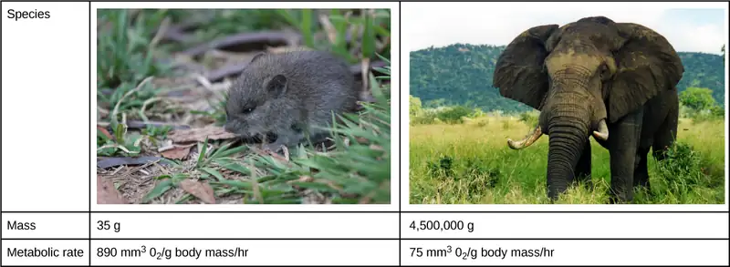
Energy Requirements Related to Levels of Activity¶
The more active an animal is, the more energy is needed to maintain that activity, and the higher its BMR or SMR. The average daily rate of energy consumption is about two to four times an animal’s BMR or SMR. Humans are more sedentary than most animals and have an average daily rate of only 1.5 times the BMR. The diet of an endothermic animal is determined by its BMR. For example: the type of grasses, leaves, or shrubs that an herbivore eats affects the number of calories that it takes in. The relative caloric content of herbivore foods, in descending order, is tall grasses > legumes > short grasses > forbs (any broad-leaved plant, not a grass) > subshrubs > annuals/biennials.
Energy Requirements Related to Environment¶
Animals adapt to extremes of temperature or food availability through torpor. Torpor is a process that leads to a decrease in activity and metabolism and allows animals to survive adverse conditions. Torpor can be used by animals for long periods, such as entering a state of hibernation during the winter months, in which case it enables them to maintain a reduced body temperature. During hibernation, ground squirrels can achieve an abdominal temperature of 0° C (32° F), while a bear’s internal temperature is maintained higher at about 37° C (99° F).
If torpor occurs during the summer months with high temperatures and little water, it is called estivation. Some desert animals use this to survive the harshest months of the year. Torpor can occur on a daily basis; this is seen in bats and hummingbirds. While endothermy is limited in smaller animals by surface to volume ratio, some organisms can be smaller and still be endotherms because they employ daily torpor during the part of the day that is coldest. This allows them to conserve energy during the colder parts of the day, when they consume more energy to maintain their body temperature.
Animal Body Planes and Cavities¶
A standing vertebrate animal can be divided by several planes. A sagittal plane divides the body into right and left portions. A midsagittal plane divides the body exactly in the middle, making two equal right and left halves. A frontal plane (also called a coronal plane) separates the front from the back. A transverse plane (or, horizontal plane) divides the animal into upper and lower portions. This is sometimes called a cross section, and, if the transverse cut is at an angle, it is called an oblique plane. Figure 33.5 illustrates these planes on a goat (a four-legged animal) and a human being.
![Illustration A shows the planes of a goat body. The midsagittal plane runs through the middle of the goat from front to back, separating the right and left sides. The frontal plane also runs from front to back, but separates the upper half of the body from the lower half. The transverse plane runs across the middle of the goat, and separate the front and back halves of the body. Illustration B shows the planes of a human body. The midsagittal plane runs from top to bottom and separates the right and left halves of the body. The Frontal plane also runs from top to bottom and separates the front and back halves of the body. The Transverse plane dissects the middle of the body between the chest and abdomen, separating the top of the body from the bottom. The midline is an imaginary line running through the middle of the body, from top to bottom.](img/figure-33-01-04.webp)
Vertebrate animals have a number of defined body cavities, as illustrated in Figure 33.6. Two of these are major cavities that contain smaller cavities within them. The dorsal cavity contains the cranial and the vertebral (or spinal) cavities. The ventral cavity contains the thoracic cavity, which in turn contains the pleural cavity around the lungs and the pericardial cavity, which surrounds the heart. The ventral cavity also contains the abdominopelvic cavity, which can be separated into the abdominal and the pelvic cavities.
![Illustration shows a cross-sectional side view of the upper part of a human body. The entire head region above the eyes and to the back of the head and a long thin strip from this region down the back is shaded to indicate the dorsal cavity. The head is labeled cranial cavity and the long thin region down the back is the spinal cavity. A large oblong area shaded at the front of the body indicates the ventral cavity. It is labeled from top to bottom as thoracic cavity, diaphragm (thin line separating regions), abdominal cavity, and pelvic cavity. The abdominal and pelvic cavities are separated by a thin dashed line and together they are labeled the abdominopelvic cavity.](img/figure-b33-01-05.webp)
Career Connection: Physical Anthropologist
Physical anthropologists study the adaptation, variability, and evolution of human beings, plus their living and fossil relatives. They can work in a variety of settings, although most will have an academic appointment at a university, usually in an anthropology department or a biology, genetics, or zoology department.
Nonacademic positions are available in the automotive and aerospace industries where the focus is on human size, shape, and anatomy. Research by these professionals might range from studies of how the human body reacts to car crashes to exploring how to make seats more comfortable. Other nonacademic positions can be obtained in museums of natural history, anthropology, archaeology, or science and technology. These positions involve educating students from grade school through graduate school. Physical anthropologists serve as education coordinators, collection managers, writers for museum publications, and as administrators. Zoos employ these professionals, especially if they have an expertise in primate biology; they work in collection management and captive breeding programs for endangered species. Forensic science utilizes physical anthropology expertise in identifying human and animal remains, assisting in determining the cause of death, and for expert testimony in trials.
33.2 Animal Primary Tissues¶
Learning Objectives
By the end of this section, you will be able to do the following:
- Describe epithelial tissues
- Discuss the different types of connective tissues in animals
- Describe three types of muscle tissues
- Describe nervous tissue
The tissues of multicellular, complex animals are four primary types: epithelial, connective, muscle, and nervous. Recall that tissues are groups of similar cells (cells carrying out related functions). These tissues combine to form organs—like the skin or kidney—that have specific, specialized functions within the body. Organs are organized into organ systems to perform functions; examples include the circulatory system, which consists of the heart and blood vessels, and the digestive system, consisting of several organs, including the stomach, intestines, liver, and pancreas. Organ systems come together to create an entire organism.
Epithelial Tissues¶
Epithelial tissues cover the outside of organs and structures in the body and line the lumens of organs in a single layer or multiple layers of cells. The types of epithelia are classified by the shapes of cells present and the number of layers of cells. Epithelia composed of a single layer of cells is called simple epithelia; epithelial tissue composed of multiple layers is called stratified epithelia. Table 33.2 summarizes the different types of epithelial tissues.
Table 33.2
| Different Types of Epithelial Tissues | ||
|---|---|---|
| Cell shape | Description | Location |
| squamous | flat, irregular round shape | simple: lung alveoli, capillaries; stratified: skin, mouth, vagina |
| cuboidal | cube shaped, central nucleus | glands, renal tubules |
| columnar | tall, narrow, nucleus toward base; tall, narrow, nucleus along cell | simple: digestive tract; pseudostratified: respiratory tract |
| transitional | round, simple but appear stratified | urinary bladder |
Squamous Epithelia¶
Squamous epithelial cells are generally round, flat, and have a small, centrally located nucleus. The cell outline is slightly irregular, and cells fit together to form a covering or lining. When the cells are arranged in a single layer (simple epithelia), they facilitate diffusion in tissues, such as the areas of gas exchange in the lungs and the exchange of nutrients and waste at blood capillaries.
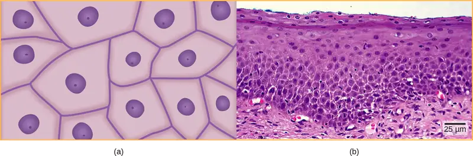
Figure 33.7a illustrates a layer of squamous cells with their membranes joined together to form an epithelium. Image Figure 33.7b illustrates squamous epithelial cells arranged in stratified layers, where protection is needed on the body from outside abrasion and damage. This is called a stratified squamous epithelium and occurs in the skin and in tissues lining the mouth and vagina.
Cuboidal Epithelia¶
Cuboidal epithelial cells, shown in Figure 33.8, are cube-shaped with a single, central nucleus. They are most commonly found in a single layer representing a simple epithelia in glandular tissues throughout the body where they prepare and secrete glandular material. They are also found in the walls of tubules and in the ducts of the kidney and liver.
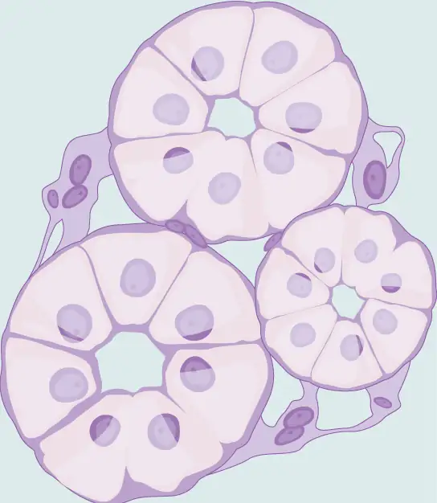
Columnar Epithelia¶
Columnar epithelial cells are taller than they are wide: they resemble a stack of columns in an epithelial layer, and are most commonly found in a single-layer arrangement. The nuclei of columnar epithelial cells in the digestive tract appear to be lined up at the base of the cells, as illustrated in Figure 33.9. These cells absorb material from the lumen of the digestive tract and prepare it for entry into the body through the circulatory and lymphatic systems.
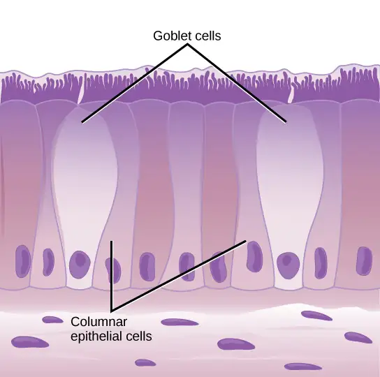
Columnar epithelial cells lining the respiratory tract appear to be stratified. However, each cell is attached to the base membrane of the tissue and, therefore, they are simple tissues. The nuclei are arranged at different levels in the layer of cells, making it appear as though there is more than one layer, as seen in Figure 33.10. This is called pseudostratified, columnar epithelia. This cellular covering has cilia at the apical, or free, surface of the cells. The cilia enhance the movement of mucus and trapped particles out of the respiratory tract, helping to protect the system from invasive microorganisms and harmful material that has been breathed into the body. Goblet cells are interspersed in some tissues (such as the lining of the trachea). The goblet cells contain mucus that traps irritants, which in the case of the trachea keep these irritants from getting into the lungs.
![Illustration shows columnar cells arranged side-by-side. The cells are wide at the top, and thin at the bottom. Shorter columnar cells are interspersed between the lower, thin part of the tall columnar cells. Some of these cells extend to the surface of the epithelium, but they are very thin at the top. The nuclei of the tall columnar cells are located near the top, and the nuclei of the shorter columnar cells are located near the bottom, giving the appearance of two layers of cells. Cilia extend from the top of the tall columnar cells. Oval goblet cells are interspersed among the columnar epithelial cells. Beneath the columnar cells is a layer of horizontal cells.](img/figure-33-02-04.webp)
Transitional Epithelia¶
Transitional or uroepithelial cells appear only in the urinary system, primarily in the bladder and ureter. These cells are arranged in a stratified layer, but they have the capability of appearing to pile up on top of each other in a relaxed, empty bladder, as illustrated in Figure 33.11. As the urinary bladder fills, the epithelial layer unfolds and expands to hold the volume of urine introduced into it. As the bladder fills, it expands and the lining becomes thinner. In other words, the tissue transitions from thick to thin.
Visual Connection
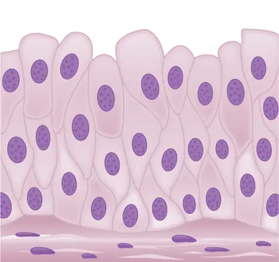
Which of the following statements about types of epithelial cells is false?
- Simple columnar epithelial cells line the tissue of the lung.
- Simple cuboidal epithelial cells are involved in the filtering of blood in the kidney.
- Pseudostratisfied columnar epithilia occur in a single layer, but the arrangement of nuclei makes it appear that more than one layer is present.
- Transitional epithelia change in thickness depending on how full the bladder is.
Connective Tissues¶
Connective tissues are made up of a matrix consisting of living cells and a nonliving substance, called the ground substance. The ground substance is made of an organic substance (usually a protein) and an inorganic substance (usually a mineral or water). The principal cell of connective tissues is the fibroblast. This cell makes the fibers found in nearly all of the connective tissues. Fibroblasts are motile, able to carry out mitosis, and can synthesize whichever connective tissue is needed. Macrophages, lymphocytes, and, occasionally, leukocytes can be found in some of the tissues. Some tissues have specialized cells that are not found in the others. Connective tissues are made up of living cells and a nonliving matrix of organic substances (usually proteins) and inorganic substances (usually a mineral or water).
The organic portion or protein fibers found in connective tissues are either collagen, elastic, or reticular fibers. Collagen fibers provide strength to the tissue, preventing it from being torn or separated from the surrounding tissues. Elastic fibers are made of the protein elastin; this fiber can stretch to one and one half of its length and return to its original size and shape. Elastic fibers provide flexibility to the tissues. Reticular fibers are the third type of protein fiber found in connective tissues. This fiber consists of thin strands of collagen that form a network of fibers to support the tissue and other organs to which it is connected. The various types of connective tissues, the types of cells and fibers they are made of, and sample locations of the tissues is summarized in Table 33.3.
Table 33.3
| Connective Tissues | |||
|---|---|---|---|
| Tissue | Cells | Fibers | Location |
| loose/areolar | fibroblasts, macrophages, some lymphocytes, some neutrophils | few: collagen, elastic, reticular | around blood vessels; anchors epithelia |
| dense, fibrous connective tissue | fibroblasts, macrophages | mostly collagen | irregular: skin; regular: tendons, ligaments |
| cartilage | chondrocytes, chondroblasts | hyaline: few: collagen fibrocartilage: large amount of collagen | shark skeleton, fetal bones, human ears, intervertebral discs |
| bone | osteoblasts, osteocytes, osteoclasts | some: collagen, elastic | vertebrate skeletons |
| adipose | adipocytes | few | adipose (fat) |
| blood | red blood cells, white blood cells | none | blood |
Loose/Areolar Connective Tissue¶
Loose connective tissue, also called areolar connective tissue, has a sampling of all of the components of a connective tissue. As illustrated in Figure 33.12, loose connective tissue has some fibroblasts; macrophages are present as well. Collagen fibers are relatively wide and stain a light pink, while elastic fibers are thin and stain dark blue to black. The material in the connective tissue gives it a loose consistency similar to a cotton ball that has been pulled apart. Loose connective tissue is found around every blood vessel and helps to keep the vessel in place. The tissue is also found around and between most body organs. In summary, areolar tissue is tough, yet flexible, and comprises membranes.
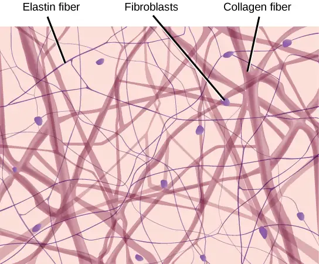
Fibrous Connective Tissue¶
Fibrous connective tissues contain large amounts of collagen fibers and few cells or matrix material. The fibers can be arranged irregularly or regularly with the strands lined up in parallel. Irregularly arranged fibrous connective tissues are found in areas of the body where stress occurs from all directions, such as the dermis of the skin. Regular fibrous connective tissue, shown in Figure 33.13, is found in tendons (which connect muscles to bones) and ligaments (which connect bones to bones).
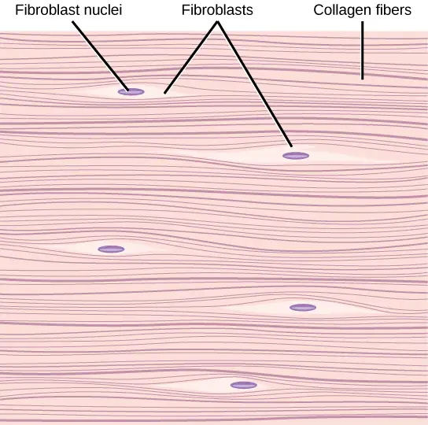
Cartilage¶
Cartilage is a connective tissue with a large amount of the matrix of variable composition. The cells, called chondrocytes, make the matrix and fibers of the tissue. Chondrocytes are found in spaces within the tissue called lacunae.
A cartilage with few collagen and elastic fibers is hyaline cartilage, illustrated in Figure 33.14. The lacunae are randomly scattered throughout the tissue and the matrix takes on a milky or scrubbed appearance with routine histological stains. Sharks have cartilaginous skeletons, as does nearly the entire human skeleton during a specific pre-birth developmental stage. A remnant of this cartilage persists in the outer portion of the human nose. Hyaline cartilage is also found at the ends of long bones, reducing friction and cushioning the articulations of these bones.
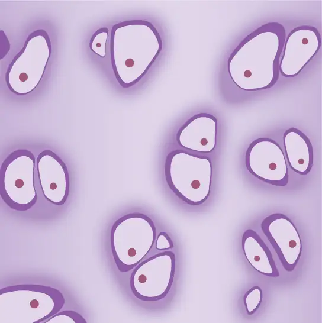
Elastic cartilage has a large amount of elastic fibers, giving it tremendous flexibility. The ears of most vertebrate animals contain this cartilage as do portions of the larynx, or voice box. Fibrocartilage contains a large amount of collagen fibers, giving the tissue tremendous strength. Fibrocartilage comprises the intervertebral discs in vertebrate animals. Hyaline cartilage found in movable joints such as the knee and shoulder becomes damaged as a result of age or trauma. Damaged hyaline cartilage is replaced by fibrocartilage and results in the joints becoming “stiff.”
Bone¶
Bone, or osseous tissue, is a connective tissue that has a large amount of two different types of matrix material. The organic matrix is similar to the matrix material found in other connective tissues, including some amount of collagen and elastic fibers. This gives strength and flexibility to the tissue. The inorganic matrix consists of mineral salts—mostly calcium salts—that give the tissue hardness. Without adequate organic material in the matrix, the tissue breaks; without adequate inorganic material in the matrix, the tissue bends.
There are three types of cells in bone: osteoblasts, osteocytes, and osteoclasts. Osteoblasts are active in making bone for growth and remodeling. Osteoblasts deposit bone material into the matrix and, after the matrix surrounds them, they continue to live, but in a reduced metabolic state as osteocytes. Osteocytes are found in lacunae of the bone. Osteoclasts are active in breaking down bone for bone remodeling, and they provide access to calcium stored in tissues. Osteoclasts are usually found on the surface of the tissue.
Bone can be divided into two types: compact and spongy. Compact bone is found in the shaft (or diaphysis) of a long bone and the surface of the flat bones, while spongy bone is found in the end (or epiphysis) of a long bone. Compact bone is organized into subunits called osteons, as illustrated in Figure 33.15. A blood vessel and a nerve are found in the center of the structure within the Haversian canal, with radiating circles of lacunae around it known as lamellae. The wavy lines seen between the lacunae are microchannels called canaliculi; they connect the lacunae to aid diffusion between the cells. Spongy bone is made of tiny plates called trabeculae; these plates serve as struts to give the spongy bone strength. Over time, these plates can break causing the bone to become less resilient. Bone tissue forms the internal skeleton of vertebrate animals, providing structure to the animal and points of attachment for tendons.
![Illustration A shows a cross section of a long bone with wide protrusions at either end. The outer part is compact bone. Inside the compact bone is porous spongy bone made of web-like trabreculae. The spongy bone fills the wide part at either end of the bone. In the middle, a hollow exists inside the spongy bone. Illustration B shows several circular osteons clustered together in compact bone. At the hub of each osteon is an opening called the Haversian canal filled with blood and lymph vessels and nerves. The lamellae surrounding the Haversian canal resemble concentric circles. Lacunae are wide spaces that contain osteocytes, in the rings between the lamellae. Microchannels called canaliculi radiate through the rings out from the central Haversian canal, connecting the lacunae together. Illustration C shows small osteoblasts surrounding the outside of bone. Larger osteoclasts are also on the outer surface, forming a hollow in the bone. Osteocytes are long, thin cells in the lacunae.](img/figure-33-02-09.webp)
Adipose Tissue¶
Adipose tissue, or fat tissue, is considered a connective tissue even though it does not have fibroblasts or a real matrix. Adipose tissue is made up of cells called adipocytes that collect and store fat in the form of triglycerides, for energy metabolism. Adipose tissues additionally serve as insulation to help maintain body temperatures, allowing animals to be endothermic, and they function as cushioning against damage to body organs. Under a microscope, adipose tissue cells appear empty due to the extraction of fat during the processing of the material for viewing, as seen in Figure 33.16. The thin lines in the image are the cell membranes, and the nuclei are the small, black dots at the edges of the cells.
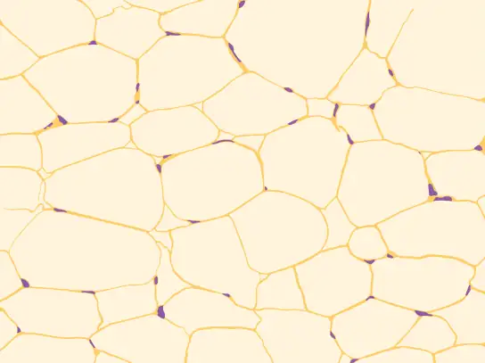
Blood¶
Blood is considered a connective tissue because it has a matrix, as shown in Figure 33.17. The living cell types are red blood cells (RBC), also called erythrocytes, and white blood cells (WBC), also called leukocytes. The fluid portion of whole blood, its matrix, is commonly called plasma.
![Different types of blood cells are shown. Red blood cells are disc-shaped, with a central indentation. Platelets are much smaller than red blood cells, narrow and long. Neutrophils, eosinophils, lymphocytes, monocytes and basophils are all about three times the diameter of a red blood cell and round. They differ in the shape of the nucleus, and in the presence or absence of granules in the cytoplasm. Macrophages, which are the largest cell type, have pseudopods which give them an irregular shape.](img/figure-33-02-11.webp)
The cell found in greatest abundance in blood is the erythrocyte. Erythrocytes are counted in millions in a blood sample: the average number of red blood cells in primates is 4.7 to 5.5 million cells per microliter. Erythrocytes are consistently the same size in a species, but vary in size between species. For example, the average diameter of a primate red blood cell is 7.5 µm, a dog is close at 7.0 µm, but a cat’s RBC diameter is 5.9 µm. Sheep erythrocytes are even smaller at 4.6 µm. Mammalian erythrocytes lose their nuclei and mitochondria when they are released from the bone marrow where they are made. Fish, amphibian, and avian red blood cells maintain their nuclei and mitochondria throughout the cell’s life. The principal job of an erythrocyte is to carry and deliver oxygen to the tissues.
Leukocytes are the predominant white blood cells found in the peripheral blood. Leukocytes are counted in the thousands in the blood with measurements expressed as ranges: primate counts range from 4,800 to 10,800 cells per µl, dogs from 5,600 to 19,200 cells per µl, cats from 8,000 to 25,000 cells per µl, cattle from 4,000 to 12,000 cells per µl, and pigs from 11,000 to 22,000 cells per µl.
Lymphocytes function primarily in the immune response to foreign antigens or material. Different types of lymphocytes make antibodies tailored to the foreign antigens and control the production of those antibodies. Neutrophils are phagocytic cells and they participate in one of the early lines of defense against microbial invaders, aiding in the removal of bacteria that have entered the body. Another leukocyte that is found in the peripheral blood is the monocyte. Monocytes give rise to phagocytic macrophages that clean up dead and damaged cells in the body, whether they are foreign or from the host animal. Two additional leukocytes in the blood are eosinophils and basophils—both help to facilitate the inflammatory response.
The slightly granular material among the cells is a cytoplasmic fragment of a cell in the bone marrow. This is called a platelet or thrombocyte. Platelets participate in the stages leading up to coagulation of the blood to stop bleeding through damaged blood vessels. Blood has a number of functions, but primarily it transports material through the body to bring nutrients to cells and remove waste material from them.
Muscle Tissues¶
There are three types of muscle in animal bodies: smooth, skeletal, and cardiac. They differ by the presence or absence of striations or bands, the number and location of nuclei, whether they are voluntarily or involuntarily controlled, and their location within the body. Table 33.4 summarizes these differences.
Table 33.4
| Types of Muscles | ||||
|---|---|---|---|---|
| Type of Muscle | Striations | Nuclei | Control | Location |
| smooth | no | single, in center | involuntary | visceral organs |
| skeletal | yes | many, at periphery | voluntary | skeletal muscles |
| cardiac | yes | single, in center | involuntary | heart |
Smooth Muscle¶
Smooth muscle does not have striations in its cells. It has a single, centrally located nucleus, as shown in Figure 33.18. Constriction of smooth muscle occurs under involuntary, autonomic nervous control and in response to local conditions in the tissues. Smooth muscle tissue is also called non-striated as it lacks the banded appearance of skeletal and cardiac muscle. The walls of blood vessels, the tubes of the digestive system, and the tubes of the reproductive systems are composed of mostly smooth muscle.
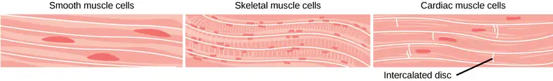
Skeletal Muscle¶
Skeletal muscle has striations across its cells caused by the arrangement of the contractile proteins actin and myosin. These muscle cells are relatively long and have multiple nuclei along the edge of the cell. Skeletal muscle is under voluntary, somatic nervous system control and is found in the muscles that move bones. Figure 33.18 illustrates the histology of skeletal muscle.
Cardiac Muscle¶
Cardiac muscle, shown in Figure 33.18, is found only in the heart. Like skeletal muscle, it has cross striations in its cells, but cardiac muscle has a single, centrally located nucleus. Cardiac muscle is not under voluntary control but can be influenced by the autonomic nervous system to speed up or slow down. An added feature to cardiac muscle cells is a line than extends along the end of the cell as it abuts the next cardiac cell in the row. This line is called an intercalated disc: it assists in passing electrical impulse efficiently from one cell to the next and maintains the strong connection between neighboring cardiac cells.
Nervous Tissues¶
Nervous tissues are made of cells specialized to receive and transmit electrical impulses from specific areas of the body and to send them to specific locations in the body. The main cell of the nervous system is the neuron, illustrated in Figure 33.19. The large structure with a central nucleus is the cell body of the neuron. Projections from the cell body are either dendrites specialized in receiving input or a single axon specialized in transmitting impulses. Some glial cells are also shown. Astrocytes regulate the chemical environment of the nerve cell, and oligodendrocytes insulate the axon so the electrical nerve impulse is transferred more efficiently. Other glial cells that are not shown support the nutritional and waste requirements of the neuron. Some of the glial cells are phagocytic and remove debris or damaged cells from the tissue. A nerve consists of neurons and glial cells.
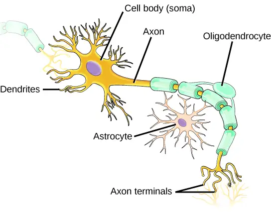
Career Connection: Pathologist
A pathologist is a medical doctor or veterinarian who has specialized in the laboratory detection of disease in animals, including humans. These professionals complete medical school education and follow it with an extensive post-graduate residency at a medical center. A pathologist may oversee clinical laboratories for the evaluation of body tissue and blood samples for the detection of disease or infection. They examine tissue specimens through a microscope to identify cancers and other diseases. Some pathologists perform autopsies to determine the cause of death and the progression of disease.
33.3 Homeostasis¶
Learning Objectives
By the end of this section, you will be able to do the following:
- Define homeostasis
- Describe the factors affecting homeostasis
- Discuss positive and negative feedback mechanisms used in homeostasis
- Describe thermoregulation of endothermic and ectothermic animals
Animal organs and organ systems constantly adjust to internal and external changes through a process called homeostasis (“steady state”). These changes might be in the level of glucose or calcium in blood or in external temperatures. Homeostasis means to maintain dynamic equilibrium in the body. It is dynamic because it is constantly adjusting to the changes that the body’s systems encounter. It is equilibrium because body functions are kept within specific ranges. Even an animal that is apparently inactive is maintaining this homeostatic equilibrium.
Homeostatic Process¶
The goal of homeostasis is the maintenance of equilibrium around a point or value called a set point. While there are normal fluctuations from the set point, the body’s systems will usually attempt to go back to this point. A change in the internal or external environment is called a stimulus and is detected by a receptor; the response of the system is to adjust the deviation parameter toward the set point. For instance, if the body becomes too warm, adjustments are made to cool the animal. If the blood’s glucose rises after a meal, adjustments are made to lower the blood glucose level by getting the nutrient into tissues that need it or to store it for later use.
Control of Homeostasis¶
When a change occurs in an animal’s environment, an adjustment must be made. The receptor senses the change in the environment, then sends a signal to the control center (in most cases, the brain) which in turn generates a response that is signaled to an effector. The effector is a muscle (that contracts or relaxes) or a gland that secretes. Homeostatsis is maintained by negative feedback loops. Positive feedback loops actually push the organism further out of homeostasis, but may be necessary for life to occur. Homeostasis is controlled by the nervous and endocrine system of mammals.
Negative Feedback Mechanisms¶
Any homeostatic process that changes the direction of the stimulus is a negative feedback loop. It may either increase or decrease the stimulus, but the stimulus is not allowed to continue as it did before the receptor sensed it. In other words, if a level is too high, the body does something to bring it down, and conversely, if a level is too low, the body does something to make it go up. Hence the term negative feedback. An example is animal maintenance of blood glucose levels. When an animal has eaten, blood glucose levels rise. This is sensed by the nervous system. Specialized cells in the pancreas sense this, and the hormone insulin is released by the endocrine system. Insulin causes blood glucose levels to decrease, as would be expected in a negative feedback system, as illustrated in Figure 33.20. However, if an animal has not eaten and blood glucose levels decrease, this is sensed in another group of cells in the pancreas, and the hormone glucagon is released causing glucose levels to increase. This is still a negative feedback loop, but not in the direction expected by the use of the term “negative.” Another example of an increase as a result of the feedback loop is the control of blood calcium. If calcium levels decrease, specialized cells in the parathyroid gland sense this and release parathyroid hormone (PTH), causing an increased absorption of calcium through the intestines and kidneys and, possibly, the breakdown of bone in order to liberate calcium. The effects of PTH are to raise blood levels of the element. Negative feedback loops are the predominant mechanism used in homeostasis.
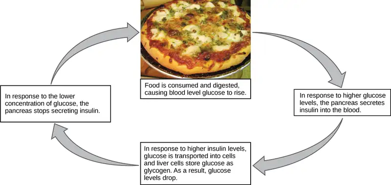
Positive Feedback Loop¶
A positive feedback loop maintains the direction of the stimulus, possibly accelerating it. Few examples of positive feedback loops exist in animal bodies, but one is found in the cascade of chemical reactions that result in blood clotting, or coagulation. As one clotting factor is activated, it activates the next factor in sequence until a fibrin clot is achieved. The final factor, a protein called thrombin, converts inactive fibrinogen to fibrin. Thrombin also activates additional clotting factor molecules earlier in the cascade, resulting in the activation of even more thrombin. This positive feedback loop amplifies the cascade for faster, more effective formation of a blood clot. Another example of positive feedback is uterine contractions during childbirth, as illustrated in Figure 33.21. The hormone oxytocin, made by the endocrine system, stimulates the contraction of the uterus. This stimulation is sensed by the nervous system. Instead of lowering the oxytocin, more oxytocin is produced until the contractions are powerful enough to produce childbirth.
Visual Connection
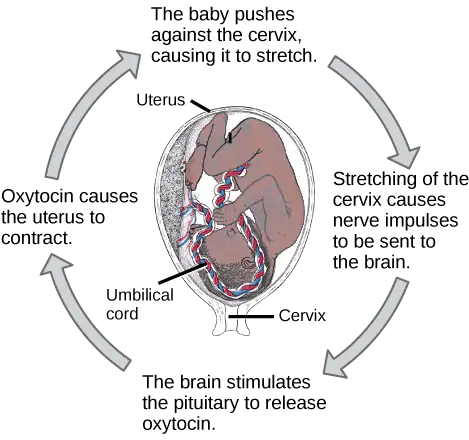
State whether each of the following processes is regulated by a positive feedback loop or a negative feedback loop.
- A person feels satiated after eating a large meal.
- The blood has plenty of red blood cells. As a result, erythropoietin, a hormone that stimulates the production of new red blood cells, is no longer released from the kidney.
Set Point¶
It is possible to adjust a system’s set point. When this happens, the feedback loop works to maintain the new setting. An example of this is blood pressure: over time, the normal or set point for blood pressure can increase as a result of continued increases in blood pressure. The body no longer recognizes the elevation as abnormal and no attempt is made to return to the lower set point. The result is the maintenance of an elevated blood pressure that can have harmful effects on the body. Medication can lower blood pressure and lower the set point in the system to a more healthy level. This is called a process of alteration of the set point in a feedback loop.
Changes can be made in a group of body organ systems in order to maintain a set point in another system. This is called acclimatization. This occurs, for instance, when an animal migrates to a higher altitude than that to which it is accustomed. In order to adjust to the lower oxygen levels at the new altitude, the body increases the number of red blood cells circulating in the blood to ensure adequate oxygen delivery to the tissues. Another example of acclimatization is animals that have seasonal changes in their coats: a heavier coat in the winter ensures adequate heat retention, and a light coat in summer assists in keeping body temperature from rising to harmful levels.
Interactive
Feedback mechanisms can be understood in terms of driving a race car along a track: watch a short video lesson on positive and negative feedback loops. feedback_loops
Homeostasis: Thermoregulation¶
Body temperature affects body activities. Generally, as body temperature rises, enzyme activity rises as well. For every ten degree centigrade rise in temperature, enzyme activity doubles, up to a point. Body proteins, including enzymes, begin to denature and lose their function with high heat (around 50oC for mammals). Enzyme activity will decrease by half for every ten degree centigrade drop in temperature, to the point of freezing, with a few exceptions. Some fish can withstand freezing solid and return to normal with thawing.
Interactive
Watch this video on thermoregulation to see illustrations of this process in a variety of animals. thermoregulate
Endotherms and Ectotherms¶
Animals can be divided into two groups: some maintain a constant body temperature in the face of differing environmental temperatures, while others have a body temperature that is the same as their environment and thus varies with the environment. Animals that rely on external temperatures to set their body temperature are ectotherms. This group has been called cold-blooded, but the term may not apply to an animal in the desert with a very warm body temperature. In contrast to ectotherms, poikilotherms are animals with constantly varying internal temperatures. An animal that maintains a constant body temperature in the face of environmental changes is called a homeotherm. Endotherms are animals that rely on internal sources for maintenance of relatively constant body temperature in varying environmental temperatures. These animals are able to maintain a level of metabolic activity in cooler external temperatures, which an ectotherm cannot due to differing enzyme levels of activity. It is worth mentioning that some ectotherms and poikilotherms have relatively constant body temperatures due to the constant environmental temperatures in their habitats. These animals are so-called ectothermic homeotherms, like some deep sea fish species.
Heat can be exchanged between an animal and its environment through four mechanisms: radiation, evaporation, convection, and conduction (Figure 33.22). Radiation is the emission of electromagnetic “heat” waves. Heat comes from the sun in this manner and radiates from dry skin the same way. Heat can be removed with liquid from a surface during evaporation. This occurs when a mammal sweats. Convection currents of air remove heat from the surface of dry skin as the air passes over it. Heat will be conducted from one surface to another during direct contact with the surfaces, such as an animal resting on a warm rock.
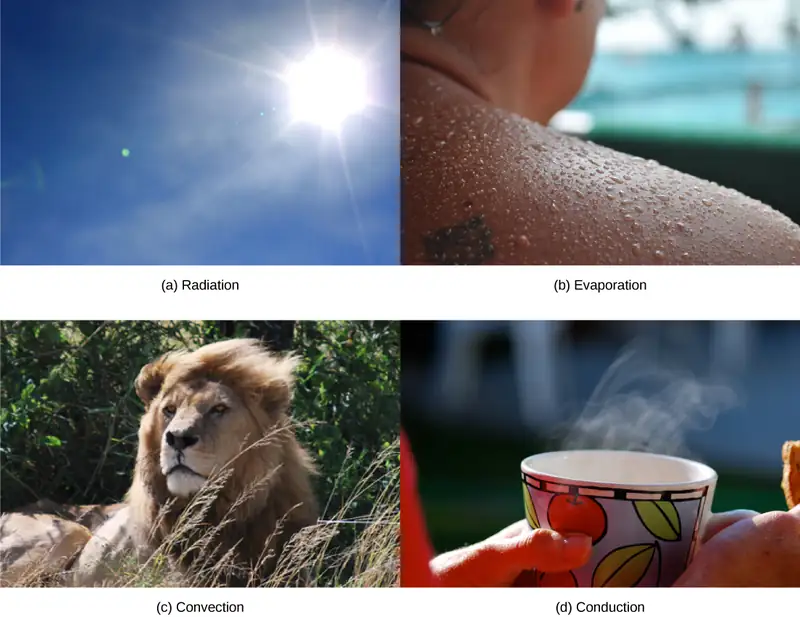
Heat Conservation and Dissipation¶
Animals conserve or dissipate heat in a variety of ways. In certain climates, endothermic animals have some form of insulation, such as fur, fat, feathers, or some combination thereof. Thick fur and feathers trap a layer of air that helps to provide thermal insulation. Polar bears and seals live and swim in a subfreezing environment and yet maintain a constant, warm, body temperature. The arctic fox, for example, uses its fluffy tail as extra insulation when it curls up to sleep in cold weather. Mammals have a residual effect from shivering and increased muscle activity: arrector pili muscles cause “goose bumps,” causing small hairs to stand up when the individual is cold; this has the intended effect of increasing body temperature. Mammals use layers of fat to achieve the same end. Loss of significant amounts of body fat will compromise an individual’s ability to conserve heat.
Endotherms use their circulatory systems to help maintain body temperature. Vasodilation brings more blood and heat to the body surface, facilitating radiation and evaporative heat loss, which helps to cool the body. Vasoconstriction reduces blood flow in peripheral blood vessels, forcing blood toward the core and the vital organs found there, and conserving heat. Some animals have adaptations to their circulatory system that enable them to transfer heat from arteries to veins, warming blood returning to the heart. This is called a countercurrent heat exchange; it prevents the cold venous blood from cooling the heart and other internal organs. This adaptation can be shut down in some animals to prevent overheating the internal organs. The countercurrent adaptation is found in many animals, including dolphins, sharks, bony fish, bees, and hummingbirds. In contrast, similar adaptations can help cool endotherms when needed, such as dolphin flukes and elephant ears.
Some ectothermic animals use changes in their behavior to help regulate body temperature. For example, a desert ectothermic animal may simply seek cooler areas during the hottest part of the day in the desert to keep from getting too warm. The same animals may climb onto rocks to capture heat during a cold desert night. Some animals seek water to aid evaporation in cooling them, as seen with reptiles. Other ectotherms use group activity such as the activity of bees to warm a hive to survive winter.
Many animals, especially mammals, use metabolic waste heat as a heat source. When muscles are contracted, most of the energy from the ATP used in muscle actions is wasted energy that translates into heat. Severe cold elicits a shivering reflex that generates heat for the body. Many species also have a type of adipose tissue called brown fat that specializes in generating heat.
Neural Control of Thermoregulation¶
The nervous system is important to thermoregulation, as illustrated in Figure 33.22. The processes of homeostasis and temperature control are centered in the hypothalamus of the advanced animal brain.
Visual Connection
![Flow chart shows how normal body temperature is maintained. If the body temperature rises, blood vessels dilate, resulting in loss of heat to the environment. Sweat glands secrete fluid. As this fluid evaporates, heat is lost from the body. As a result, the body temperature falls to normal body temperature. If body temperature falls, blood vessels constrict so that heat is conserved. Sweat glands do not secrete fluid. Shivering (involuntary contraction of muscles) releases heat which warms the body. Heat is retained, and body temperature increases to normal.](img/figure-b33-04-03.webp)
When bacteria are destroyed by leukocytes, pyrogens are released into the blood. Pyrogens reset the body’s thermostat to a higher temperature, resulting in fever. How might pyrogens cause the body temperature to rise?
The hypothalamus maintains the set point for body temperature through reflexes that cause vasodilation and sweating when the body is too warm, or vasoconstriction and shivering when the body is too cold. It responds to chemicals from the body. When a bacterium is destroyed by phagocytic leukocytes, chemicals called endogenous pyrogens are released into the blood. These pyrogens circulate to the hypothalamus and reset the thermostat. This allows the body’s temperature to increase in what is commonly called a fever. An increase in body temperature causes iron to be conserved, which reduces a nutrient needed by bacteria. An increase in body heat also increases the activity of the animal’s enzymes and protective cells while inhibiting the enzymes and activity of the invading microorganisms. Finally, heat itself may also kill the pathogen. A fever that was once thought to be a complication of an infection is now understood to be a normal defense mechanism.
Chapter Review¶
Key Terms¶
- acclimatization
- alteration in a body system in response to environmental change
- alteration
- change of the set point in a homeostatic system
- apodeme
- ingrowth of an animal’s exoskeleton that functions as an attachment site for muscles
- asymmetrical
- describes animals with no axis of symmetry in their body pattern
- basal metabolic rate (BMR)
- metabolic rate at rest in endothermic animals
- canaliculus
- microchannel that connects the lacunae and aids diffusion between cells
- cartilage
- type of connective tissue with a large amount of ground substance matrix, cells called chondrocytes, and some amount of fibers
- chondrocyte
- cell found in cartilage
- columnar epithelia
- epithelia made of cells taller than they are wide, specialized in absorption
- connective tissue
- type of tissue made of cells, ground substance matrix, and fibers
- cuboidal epithelia
- epithelia made of cube-shaped cells, specialized in glandular functions
- dorsal cavity
- body cavity on the posterior or back portion of an animal; includes the cranial and vertebral cavities
- ectotherm
- animal incapable of maintaining a relatively constant internal body temperature
- endotherm
- animal capable of maintaining a relatively constant internal body temperature
- epithelial tissue
- tissue that either lines or covers organs or other tissues
- estivation
- torpor in response to extremely high temperatures and low water availability
- fibrous connective tissue
- type of connective tissue with a high concentration of fibers
- frontal (coronal) plane
- plane cutting through an animal separating the individual into front and back portions
- fusiform
- animal body shape that is tubular and tapered at both ends
- hibernation
- torpor over a long period of time, such as a winter
- homeostasis
- dynamic equilibrium maintaining appropriate body functions
- lacuna
- space in cartilage and bone that contains living cells
- loose (areolar) connective tissue
- type of connective tissue with small amounts of cells, matrix, and fibers; found around blood vessels
- matrix
- component of connective tissue made of both living and nonliving (ground substances) cells
- midsagittal plane
- plane cutting through an animal separating the individual into even right and left sides
- negative feedback loop
- feedback to a control mechanism that increases or decreases a stimulus instead of maintaining it
- osteon
- subunit of compact bone
- positive feedback loop
- feedback to a control mechanism that continues the direction of a stimulus
- pseudostratified
- layer of epithelia that appears multilayered, but is a simple covering
- sagittal plane
- plane cutting through an animal separating the individual into right and left sides
- set point
- midpoint or target point in homeostasis
- simple epithelia
- single layer of epithelial cells
- squamous epithelia
- type of epithelia made of flat cells, specialized in aiding diffusion or preventing abrasion
- standard metabolic rate (SMR)
- metabolic rate at rest in ectothermic animals
- stratified epithelia
- multiple layers of epithelial cells
- thermoregulation
- regulation of body temperature
- torpor
- decrease in activity and metabolism that allows an animal to survive adverse conditions
- trabecula
- tiny plate that makes up spongy bone and gives it strength
- transitional epithelia
- epithelia that can transition for appearing multilayered to simple; also called uroepithelial
- transverse (horizontal) plane
- plane cutting through an animal separating the individual into upper and lower portions
- ventral cavity
- body cavity on the anterior or front portion of an animal that includes the thoracic cavities and the abdominopelvic cavities
Summary¶
33.1 Animal Form and Function¶
Animal bodies come in a variety of sizes and shapes. Limits on animal size and shape include impacts to their movement. Diffusion affects their size and development. Bioenergetics describes how animals use and obtain energy in relation to their body size, activity level, and environment.
33.2 Animal Primary Tissues¶
The basic building blocks of complex animals are four primary tissues. These are combined to form organs, which have a specific, specialized function within the body, such as the skin or kidney. Organs are organized together to perform common functions in the form of systems. The four primary tissues are epithelia, connective tissues, muscle tissues, and nervous tissues.
33.3 Homeostasis¶
Homeostasis is a dynamic equilibrium that is maintained in body tissues and organs. It is dynamic because it is constantly adjusting to the changes that the systems encounter. It is in equilibrium because body functions are kept within a normal range, with some fluctuations around a set point for the processes.
Review Questions¶
33.1 Animal Form and Function¶
1. Which type of animal maintains a constant internal body temperature?
- endotherm
- ectotherm
- coelomate
- mesoderm
Answer
A
2. The symmetry found in animals that move swiftly is ________.
- radial
- bilateral
- sequential
- interrupted
Answer
B
3. What term describes the condition of a desert mouse that lowers its metabolic rate and “sleeps” during the hot day?
- turgid
- hibernation
- estivation
- normal sleep pattern
Answer
C
4. A plane that divides an animal into equal right and left portions is ________.
- diagonal
- midsagittal
- coronal
- transverse
Answer
B
5. A plane that divides an animal into dorsal and ventral portions is ________.
- sagittal
- midsagittal
- coronal
- transverse
Answer
D
6. The pleural cavity is a part of which cavity?
- dorsal cavity
- thoracic cavity
- abdominal cavity
- pericardial cavity
Answer
B
7. How could the increasing global temperature associated with climate change impact ectotherms?
- Ectotherm diversity will decrease in cool regions.
- Ectotherms will be able to be active all day in the tropics.
- Ectotherms will have to expend more energy to cool their body temperatures.
- Ectotherms will be able to expand into new habitats.
Answer
D
8. Although most animals are bilaterally symmetrical, a few exhibit radial symmetry. What is an advantage of radial symmetry?
- It confuses predators.
- It allows the animal to gather food from all sides.
- It allows the animal to undergo rapid, purposeful movement in any direction.
- It lets an animal use its dorsal surface to sense its environment.
Answer
B
33.2 Animal Primary Tissues¶
9. Which type of epithelial cell is best adapted to aid diffusion?
- squamous
- cuboidal
- columnar
- transitional
Answer
C
10. Which type of epithelial cell is found in glands?
- squamous
- cuboidal
- columnar
- transitional
Answer
B
11. Which type of epithelial cell is found in the urinary bladder?
- squamous
- cuboidal
- columnar
- transitional
Answer
D
12. Which type of connective tissue has the most fibers?
- loose connective tissue
- fibrous connective tissue
- cartilage
- bone
Answer
B
13. Which type of connective tissue has a mineralized different matrix?
- loose connective tissue
- fibrous connective tissue
- cartilage
- bone
Answer
D
14. The cell found in bone that breaks it down is called an ________.
- osteoblast
- osteocyte
- osteoclast
- osteon
Answer
C
15. The cell found in bone that makes the bone is called an ________.
- osteoblast
- osteocyte
- osteoclast
- osteon
Answer
A
16. Plasma is the ________.
- fibers in blood
- matrix of blood
- cell that phagocytizes bacteria
- cell fragment found in the tissue
Answer
B
17. The type of muscle cell under voluntary control is the ________.
- smooth muscle
- skeletal muscle
- cardiac muscle
- visceral muscle
Answer
B
18. The part of a neuron that contains the nucleus is the
- cell body
- dendrite
- axon
- glial
Answer
A
19. Why are intercalated discs essential to the function of cardiac muscle?
- The discs maintain the barriers between the cells.
- The discs pass nutrients between cells.
- The discs ensure that all the cardiac muscle cells beat as a single unit.
- The discs control the heart rate.
Answer
C
33.3 Homeostasis¶
20. When faced with a sudden drop in environmental temperature, an endothermic animal will:
- experience a drop in its body temperature
- wait to see if it goes lower
- increase muscle activity to generate heat
- add fur or fat to increase insulation
Answer
C
21. Which is an example of negative feedback?
- lowering of blood glucose after a meal
- blood clotting after an injury
- lactation during nursing
- uterine contractions during labor
Answer
A
22. Which method of heat exchange occurs during direct contact between the source and animal?
- radiation
- evaporation
- convection
- conduction
Answer
D
23. The body’s thermostat is located in the ________.
- homeostatic receptor
- hypothalamus
- medulla
- vasodilation center
Answer
B
24. Which of the following is not true about acclimatization?
- Acclimatization allows animals to compensate for changes in their environment.
- Acclimatization improves function in a new environment.
- Acclimatization occurs when an animal tries to reestablish a homeostatic set point.
- Acclimatization is passed on to offspring of acclimated individuals.
Answer
D
25. Which of the following is not a way that ectotherms can change their body temperatures?
- Sweating for evaporative cooling.
- Adjusting the timing of their daily activities.
- Seek out or avoid direct sunlight.
- Huddle in a group.
Answer
A
Critical Thinking Questions¶
33.1 Animal Form and Function¶
26. How does diffusion limit the size of an organism? How is this counteracted?
Answer
Diffusion is effective over a very short distance. If a cell exceeds this distance in its size, the center of the cell cannot get adequate nutrients nor can it expel enough waste to survive. To compensate for this, cells can loosely adhere to each other in a liquid medium, or develop into multi-celled organisms that use circulatory and respiratory systems to deliver nutrients and remove wastes.
27. What is the relationship between BMR and body size? Why?
Answer
Basal Metabolic Rate is an expression of the metabolic processes that occur to maintain an individual’s functioning and body temperature. Smaller bodied animals have a relatively large surface area compared to a much larger animal. The large animal’s large surface area leads to increased heat loss that the animal must compensate for, resulting in a higher BMR. A small animal, having less relative surface area, does not lose as much heat and has a correspondingly lower BMR.
28. Explain how using an open circulatory system constrains the size of animals.
Answer
In an open circulatory system, the heart(s) pump blood into an open cavity, bathing the tissues. As the blood diffuses through the tissue space, it delivers nutrients in exchange for receiving metabolic wastes. The blood then diffuses back to the heart to be pumped again. However, since this system relies on diffusion, the size of animals that use an open circulatory system is limited to fairly small volumes so that the blood can diffuse rapidly enough to efficiently exchange molecules with the tissues.
29. Describe one key environmental constraint for ectotherms and one for endotherms. Why are they limited by different factors?
Answer
Endotherms are constrained by the availability of food sources in the environment, while the temperature range in a geographic area limits ectotherms. The difference in how the two groups maintain their body temperature determines the key constraint for each group.
33.2 Animal Primary Tissues¶
30. How can squamous epithelia both facilitate diffusion and prevent damage from abrasion?
Answer
Squamous epithelia can be either simple or stratified. As a single layer of cells, it presents a very thin epithelia that minimally inhibits diffusion. As a stratified epithelia, the surface cells can be sloughed off and the cells in deeper layers protect the underlying tissues from damage.
31. What are the similarities between cartilage and bone?
Answer
Both contain cells other than the traditional fibroblast. Both have cells that lodge in spaces within the tissue called lacunae. Both collagen and elastic fibers are found in bone and cartilage. Both tissues participate in vertebrate skeletal development and formation.
32. Multiple sclerosis is a debilitating autoimmune disease that results in the loss of the insulation around neuron axons. What cell type is the immune system attacking, and how does this disrupt the transfer of messages by the nervous system?
Answer
In multiple sclerosis, the immune system attacks the oligodendrocytes. The death of oligodendrocytes results in the loss of the insulating sheath around the axon of the neurons. When the sheath is gone, the electrical impulses travel much more slowly down the length of the axon.
33. When a person leads a sedentary life his skeletal muscles atrophy, but his smooth muscles do not. Why?
Answer
Skeletal muscles are involved in voluntary motion, so the person has to make the choice to work those muscles through exercise or movement. Smooth muscles are involved in involuntary activities of the body (ex. blood vessel expansion and contraction, intestinal peristalsis) so they are active even when a person is sedentary.
33.3 Homeostasis¶
34. Why are negative feedback loops used to control body homeostasis?
Answer
An adjustment to a change in the internal or external environment requires a change in the direction of the stimulus. A negative feedback loop accomplishes this, while a positive feedback loop would continue the stimulus and result in harm to the animal.
35. Why is a fever a “good thing” during a bacterial infection?
Answer
Mammalian enzymes increase activity to the point of denaturation, increasing the chemical activity of the cells involved. Bacterial enzymes have a specific temperature for their most efficient activity and are inhibited at either higher or lower temperatures. Fever results in an increase in the destruction of the invading bacteria by increasing the effectiveness of body defenses and an inhibiting bacterial metabolism.
36. How is a condition such as diabetes a good example of the failure of a set point in humans?
Answer
Diabetes is often associated with a lack in production of insulin. Without insulin, blood glucose levels go up after a meal, but never go back down to normal levels.
37. On a molecular level, how can endotherms produce their own heat by adjusting processes associated with cellular respiration? If needed, review Ch. 7 for details on respiration.
Answer
Animals are capable of thermal uncoupling when they need to generate heat to maintain their body temperatures. In this process, an uncoupling protein provides a channel in the inner mitochondrial membrane that allows protons to leave the lumen without moving through the ATP synthase. This generates heat rather than chemical energy as the final product of cellular respiration.
Visual Connection Questions¶
33.2 Animal Primary Tissues¶
38. Figure 33.11 Which of the following statements about types of epithelial cells is false?
- Simple columnar epithelial cells line the tissue of the lung.
- Simple cuboidal epithelial cells are involved in the filtering of blood in the kidney.
- Pseudostratisfied columnar epithilia occur in a single layer, but the arrangement of nuclei makes it appear that more than one layer is present.
- Transitional epithelia change in thickness depending on how full the bladder is.
Answer
33.3 Homeostasis¶
39. Figure 33.21 State whether each of the following processes are regulated by a positive feedback loop or a negative feedback loop.
- A person feels satiated after eating a large meal.
- The blood has plenty of red blood cells. As a result, erythropoietin, a hormone that stimulates the production of new red blood cells, is no longer released from the kidney.
Answer
Figure 33.21 Both processes are the result of negative feedback loops. Negative feedback loops, which tend to keep a system at equilibrium, are more common than positive feedback loops.
40. Figure 33.23 When bacteria are destroyed by leukocytes, pyrogens are released into the blood. Pyrogens reset the body’s thermostat to a higher temperature, resulting in fever. How might pyrogens cause the body temperature to rise?
Answer
Figure 33.23 Pyrogens increase body temperature by causing the blood vessels to constrict, inducing shivering, and stopping sweat glands from secreting fluid.
Adapted from Biology 2e by OpenStax, licensed under CC BY 4.0. Access the original for free at openstax.org. Changes: converted to the web reading format of The Open Book Project.